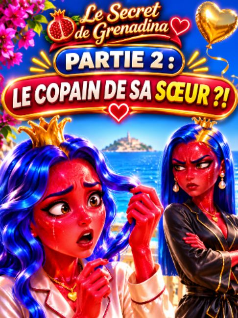

— Elle a fait combien de vues ?
— Deux millions. Et je n'ai rien monté.
Des millions de vues, en automatique.
FruitRadar est une extension Chrome qui crée tes vidéos TikTok de fruits IA, de l'idée à la publication. Tu choisis l'histoire, il s'occupe du reste.
En 2 mois d'automatisation, voici mon résultat :
- 89,6 Kabonnés sur TikTok
- 2,7 Mvues sur une seule vidéo
- 6,7 Mvues sur trois vidéos
Au générique de ta prochaine vidéo
- Repérage
- Le Radar
- Scénario
- Claude
- Images et miniature
- ChatGPT
- Clips
- Grok
- Montage
- CapCut
- Réalisation
- FruitRadar
- Publication
- Toi
FruitRadar dirige tout le tournage, avec tes comptes, dans ton navigateur. Un son te prévient à la fin : ta vidéo t'attend dans TikTok, prête à publier.
Le Secret de Grenadina
6,7 millions de vues en trois parties


Ce sont mes chiffres, pas une garantie.
Dans les coulisses
FruitRadar s'ouvre dans un onglet de Chrome. Voilà ce que tu y trouves.


AI Cash Factory
Ma communauté sur Skool, pour apprendre à faire comme moi.
Ton abonnement FruitRadar
25,99 €par mois
- Le Radar : les vidéos de fruits IA qui percent sur TikTok, notées sur 100
- L'automatisation : histoire, images, clips, montage et miniature
- Les mises à jour, en un clic
Essayer le Radar gratuitement pendant 3 jours
Sans engagement : tu arrêtes en ligne quand tu veux. Extension Chrome, sur ordinateur. Elle travaille avec tes comptes Claude, ChatGPT, Grok et CapCut.
Les coulisses sur Instagram : @timothee.hml